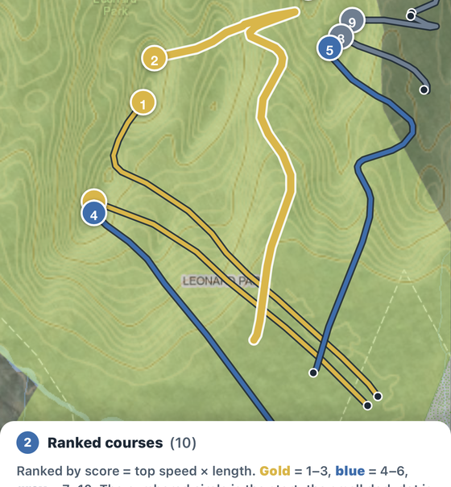

Fall Line reads LiDAR terrain and Westchester County GIS data, rides a simulated sled down every slope, and ranks the courses by speed and length — clear of roads, driveways, buildings and water.

No drawing, no guessing. Point it at a hill and let the terrain do the talking.
Drag the map so the dashed square (½, 1 or 1½ miles) covers the hills you care about, or jump straight to a county park.
Fall Line downloads the LiDAR terrain for that square, builds a hazard map from county planimetrics, and rides a sled from every steep spot.
Ten distinct courses, scored by top speed × length. Tap one to zoom in over the county's 2-ft contours and see its elevation profile.
A course only survives if a simulated sled — gravity, sliding friction, air drag and a 0.3 g cornering limit — can ride it top to bottom and come to rest on its own.
Everything runs in your browser. Nothing is uploaded, and there is no account.